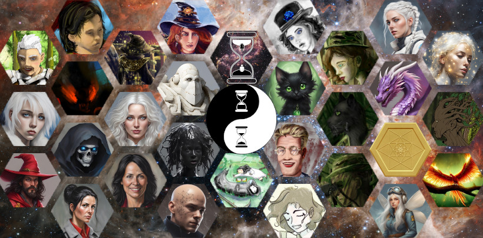

Links
You’ll find links to other websites on this page, including those of people I work with, things I like and tools I use.
Audio
Audacity - Audio editor and multi-tool.
LibriVox - Public domain audiobooks read by volunteers. This is a very handy resource for audio samples to use for zero-shot TTS engines. I regularly use this for my Voice-Zero project (see below, for more information).
Resemble Enhance - AI noise remover for voice samples.
RNNoise - AI noise remover for voice samples. This one works in real-time.
SoX - Command-line audio multi-tool.
Music
Dogwood - Absolutely amazing singer. She has an incredible vocal range and is also a trained actor. She emotes wonderfully in song, in character voices. Her music includes a bit of foul language, but she’s well worth a listen, anyway. She shines in Persephone is Dead, Long Live Persephone.
Nathaniel Johnstone - Steampunk music, often with Dogwood as the lead singer. They shine best in the Antikythera Mechanism.
Wind Rose - Dwarf-style music. I sometimes write while listening to this band.
Gnome - These guys rock really hard. Most of their work is instrumental. My current favorite music to write to.
Publishing
Draft2Digital - The platform used for publishing my novels. If you use this link to sign up, you’ll get me a small bonus from Draft2Digital for each of your sales for the first two years.
Text to Speech and Voice Conversion
Chatterbox - AI zero-shot TTS engine, but also includes a voice converter. Chatterbox can optionally add emotion to the samples it produces. It’s really slow without a GPU.
Kanade Tokenizer - Amazing piece of software, which can function as a voice converter or voice resynthesizer, which can remove all noise from a voice sample, even reverb.
Kokoro - AI TTS engine that speaks well, but is limited to a small selection of voices. Unfortunately, it’s very rigid in its manner of speaking, and when it makes a mistake, generating fresh audio samples makes no difference, because it will always make the same mistakes.
Kokoro TTS - Fork of Kokoro that’s geared toward ease of use from the command-line. This is the version of Kokoro I actually use.
Piper AI TTS engine. I use this to read my writing back to me, during editing, because it’s a big help to hear the text exactly as written. I catch a lot more typos that way.
Pocket TTS - AI zero-shot TTS engine. This is much faster than Chatterbox and runs well on CPU. Pocket speaks well.
Voice-Zero - One of my side projects, to put together a repository of voice samples suitable for use with zero-shot TTS engines.